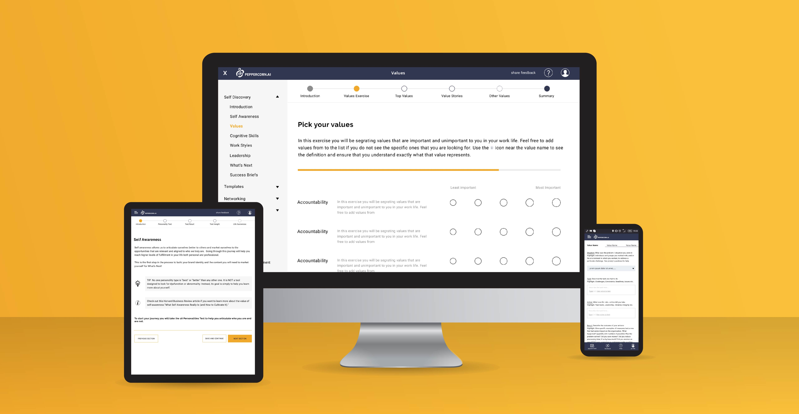

Peppercorn Discovery Program
Designing Peppercorn’s Discovery Platform that aids users in their job search process
My Role
Research, Information Architecture, UX/UI design
Duration
6 months
The Goal
Redesign the program for web and mobile platforms to make it accessible to a larger audience
Peppercorn Discovery is a program created to help candidates identify what they want out of their career and identify the words to articulate that well to companies and recruiters.
The program had been presented through multiple Word and Excel documents, which were not easy to follow without the help of a coach or someone else who was familiar with the program.
The goal was to move the progam to the web and reformat it so that it is easy for a candidate to complete without additional help. This would also make the platform accessible to a larger audience.
Information Gathering and Research
Went through research done by Peppercorn and learnt from the founder more about the program and how the candidates responded to it
The initial goal was to understand the platform and the content better. Peppercorn had already done a lot of research on the market, competitors, and personas. I spent some time understanding the background from what they had while also looking into LinkedIn Pro Finder to understand what clients were looking for when they choose a career coach.
I also spent time with the founder to understand the program itself while gathering information on how candidates responded to the program. Main questions I focussed on:
Where did candidates get stuck?
What did they find most valuable?
Tips and tricks that helped them get through difficult sections?
What they liked and disliked?
What changed with different types of users: those just starting out, those pivoting to a different roles, and those who are unsure of their next steps?
Program Restructuring
Based on insights gathered the program content was edited:
The program which was initially one large chunk, I separated into phases based on the kind of mindset the candidate would need to be in to complete the program.
All the individual exercises had to be looked through and the content reformatted to take advantage of the lack of limitations that the Google docs and Excel sheets had placed on it.
Additional help functionality had to be built in where candidates were most likely to require it.
Architecture
After the restructuring, I developed an overall architecture for the platform, with plans for future feature ideas, and an idea for how much and what to include in our MVP.
Wireframes
Following initial outlines I developed wireframes for the different kinds of pages that would be needed in the platform. This helped aid discussions around what would work best and discover potential usability issues. Our initial focus for the MVP was to develop Phase 1 and 2 of the product.
Testing
Users selected
Those who were completely unfamiliar with the program
Those who had gone through the program in its previous form
Main Questions
Is the content easy to follow?
Are there any sections that you feel is harder than when you were doing the program in the Google doc?
What would you change or improve?
Design Considerations
The following screenshots showcase the main ideas that shaped the design and how the testing results influenced them.
Every module started with a video explaining the ideal mindset to be in to effectively complete it. I chose this medium rather than the text content that was provided in the original as listening to the coach explain this during sessions was a lot more compelling and easier for the candidates to grasp.
Making it easy to contact a coach when the candidate is stuck during the course of the program
Testing Results: Many did not think to use this even if they were facing issues
Action Taken: We decided to include content encouraging this action throughout the program itself in the form of blogs with links to contact coaches. Needed more research and content revisions.
The STAR format was heavily restructured from pages of text to make easier. It was converted into dropdowns and individual instructions were separated for each part.
Testing Results: Candidates found this section a lot harder as the new structure limited free flow of thought.
Action Taken: This section was completely removed from this module of the program. We added an open text entry with minimal formatting instructions (simplified from the document version) later on in the program when candidates are clearer about what they want in their career.
Since most modules involved a lot of self reflection and typing, I felt that we needed to ensure that the mobile version would have speech to text enabled./p>
Final Design
Once basic wireframes were approved and edited based on feedback from the team and testing results I started creating the final designs.

Went with a minimal, clean layout and UI style that focussed on the content.
To ensure candidates were not overwhelmed with text enough spacing between characters and lines made it seem less dense. Content was also broken up into smaller chunks.
Access to blog content is included where users have been found to get stuck most often and also to provide more information on frequently asked questions. Blogs are also an opportunity for Peppercorn to introduce their career coaches, who can add additional value to the program, to the user.
See next project
DAI Alarms Console